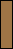

ubongo-utils is a set of utilities for Ubongo, Ubongo Mini, Ubongo Duel and Ubongo 3-D puzzle games designed by Grzegorz Rejchtman. Ubongo Extreme (hexagonal tiles) or Ubongo Trigo (triangle tiles) is not supported. It runs on UNIX based operating systems including Linux. All utilities are designed to be invoked on a command line.
ubongo-utils currently provides the following programs:
In the next three sections, I explain how to use those utility programs.
The 'Solver' utility solves a puzzle. ubongo-utils provides a solver command for each Ubongo variant.
ubongo-solve-orig (for Ubongo)ubongo-solve-duel (for Ubongo Duel)ubongo-solve-minib (for Ubongo Mini - blue tiles)ubongo-solve-minig (for Ubongo Mini - green tiles)ubongo-solve-minir (for Ubongo Mini - red tiles)ubongo-solve-miniy (for Ubongo Mini - yellow tiles)ubongo-solve-3d (for Ubongo 3-D)Specifying shape of a board and pieces placed on it, 'Solver' outputs its solutions. The shape of a board is represented with a text file. Here is an example:
.###.
#####
###.#
###.#
Each character '#' is a square printed on the board. The actual board corresponding with the text file above looks like:
To specify pieces placed on the board, upper letters ('A', 'B', 'C' ...) are used. An unique letter is assigned to each piece in an Ubongo variant.
Ubongo:
| A: | B: |
C: |
D: | E: | F: | G: |
H: |
I: |
J: |
K: | L: |
Ubongo Duel:
A: |
B: |
C: |
D: | E: |
F: |
G: |
H: |
I: |
J: |
K: | L: |
M: |
N: |
O: |
P: |
Q: |
R: |
S: | T: |
U: |
Ubongo Mini - Blue Tiles:
A: |
B: | C: | D: |
E: |
F: |
G: |
Ubongo Mini - Green Tiles:
A: |
B: |
C: |
D: |
E: |
F: |
G: |
Ubongo Mini - Red Tiles:
A: |
B: |
C: |
D: | E: |
F: |
G: |
Ubongo Mini - Yellow Tiles:
A: |
B: |
C: | D: | E: | F: | G: |
Ubongo 3-D:
| A: | B: |
C: |
D: |
E: | F: |
G: |
H: |
| I: | J: |
K: |
L: | M: | N: |
O: |
P: |
Suppose that you'd like to solve a puzzle for Ubongo Duel, with the board above saved as the text file 'board1.txt', and with the piece 'C', 'L' and 'R'. Type the following line to execute the solver.
$ ubongo-solve-duel board1.txt C L R
The 'Solver' program, the 'ubongo-solve-duel' command, will output a solution:
* C L R
.LLC.
LLRCC
RLR.C
RRR.C
It means that the solution looks like:
'Solver' program for Ubongo 3-D, 'ubongo-solve-3d' command, outputs text data slightly different from other solver programs:
FFOE
.FFE
====
FOOO
.EEE
The lines before the horizontal rule '====' represents the second level (i.e. the first floor) of the solution and lines after the horizontal rule are the first level (i.e. the ground floor), respectively.
The common form of the solver commands is:
solver-program [option...] BOARD-FILE PIECE...
or
solver-program [option...] -f PROBLEM-FILE BOARD-FILE
PIECE is an upper letter ('A', 'B', 'C' ...) assigned to a piece. PROBLEM-FILE is a file which describes combinations of pieces, one combination per a line. An example of PROBLEM-FILE is shown below:
* A C P
* B C E
* B C M
* B C N
* B C P
* B C R
When PROBLEM-FILE is specified, the solver tries to solve all puzzles described in the file. Note that result data output by 'Analyzer' (described later) can also be used as PROBLEM-FILE. You can specify either PROBLEM-FILE or PIECE, but not both.
The solver programs recognize the options described below:
By default, the solver programs display only one solution. Specifying this option, solvers output all solution of the puzzle.
Read a list of combinations of pieces from FILE.
Print command line usage, then exits.
Print a version number, then exits.
The solver programs exit with the exit code 0 (success) even when the puzzle has no solution.
The 'Analyzer' utility is similar to 'Solver', but it assists you in creating puzzles. Specifying a board file and how many pieces are placed on it, 'Analyzer' outputs all solvable combinations of pieces.
Suppose that you'd like to create three piece puzzles of Ubongo Duel. Since there are 21 kinds of pieces in Ubongo Duel, 'Analyzer' tries solving
C(21, 3) = (21 * 20 * 19) / (3 * 2 * 1) = 1330
ways of combinations of pieces, and it outputs all solvable combinations of pieces for the given board, like this:
$ ubongo-analyze-duel board1.txt 3
.###.
#####
###.#
###.#
; squares=16
* A C P ; solutions=1
* B C E ; solutions=1
* B C M ; solutions=1
* B C N ; solutions=1
* B C P ; solutions=1
* B C R ; solutions=2
* C D H ; solutions=1
* C I T ; solutions=1
* C L R ; solutions=1
* C N U ; solutions=1
* C O S ; solutions=1
* C Q T ; solutions=1
* C R T ; solutions=1
; puzzles=13
Same as 'Solver', ubongo-utils also provides an analyzer command for each Ubongo variant.
ubongo-analyze-orig (for Ubongo)ubongo-analyze-duel (for Ubongo Duel)ubongo-analyze-minib (for Ubongo Mini - blue tiles)ubongo-analyze-minig (for Ubongo Mini - green tiles)ubongo-analyze-minir (for Ubongo Mini - red tiles)ubongo-analyze-miniy (for Ubongo Mini - yellow tiles)ubongo-analyze-3d (for Ubongo 3-D)In output data, a character ';' means beginning of a comment. Each comment ends with a newline. 'Analyzer' also outputs solutions if the '--show-solution' option is specified:
$ ubongo-analyze-duel --show-solution board1.txt 3
.###.
#####
###.#
###.#
; squares=16
* A C P ; solutions=1
.PPC.
PPACC
PPA.C
AAA.C
* B C E ; solutions=1
.EEC.
EEECC
BBE.C
BBB.C
* B C M ; solutions=1
.MMC.
(snip)
The common form of the analyzer commands is:
analyzer-program [option...] BOARD-FILE NPIECES
The format of BOARD-FILE is the same as that of 'Solver'. NPIECIES must be an integer greater than zero. The analyzer programs recognize the following options:
Show all solutions. This option implies '--show-solution'.
Print command line usage, then exits.
Output solvable combinations of pieces with N solutions or less only.
Also output a solution.
Print a version number, then exits.
The analyzer programs exit with the exit code 0 (success) even when it has reported no solvable combinations of pieces.
'HTML converter' converts a text file to an HTML file and PNG image files. The text file may contains one of the following data:
Same as 'Solver' and 'Analyzer', ubongo-utils provides a converter command for each Ubongo variant.
ubongo-html-orig (for Ubongo)ubongo-html-duel (for Ubongo Duel)ubongo-html-minib (for Ubongo Mini - blue tiles)ubongo-html-minig (for Ubongo Mini - green tiles)ubongo-html-minir (for Ubongo Mini - red tiles)ubongo-html-miniy (for Ubongo Mini - yellow tiles)If you'd like to convert the board file 'board1.txt' for Ubongo Duel, type:
$ ubongo-html-duel board1.txt
It generates 'board1.html' and some PNG files at the current directory. The created HTML page looks like:
If you want to create an HTML page of a solution, do it like this way:
$ ubongo-solve-duel board1.txt C L R > solution1.txt
$ ubongo-html-duel solution1.txt
It generates 'solution1.html' and PNG files at the current directory. The HTML page looks like:


To convert a list of combinations of pieces, run the following commands:
$ ubongo-analyze-duel board1.txt 3 > combinations1.txt
$ ubongo-html-duel --problem combinations.txt
It makes 'combinations1.html' and PNG files. The HTML page looks like:


'combinations1.html' may contains solutions. 'HTML Converter' also converts solutions.
$ ubongo-analyze-duel --solution board1.txt 3 > combinations1.txt
$ ubongo-html-duel combinations.txt
The generated HTML page looks like:


The common form of the analyzer commands is:
html-converter-program [option...] TEXT-FILE
The 'HTML Converter' programs recognize the following options:
Create an HTML file with the filename 'BASENAME.html' and create PNG files for representing board and solutions with the filenames starting with 'BASENAME-'. The default value is basename of TEXT-FILE.
This option changes basenames of output files. To change an output directory, use '--output-prefix' instead.
Print command line usage, then exits.
Do not output solutions. Output problems (combinations of pieces) only.
Generate an HTML file at the directory PREFIX. This options also changes locations of PNG files generated by 'HTML Converter'. The default value is '.'. Also see description of '--basename', '--board-directory', '--solution-directory' and '--piece-directory' options.
Print a version number, then exits.
Specify size of PNG files for representing pieces as problems. In generated image files, pieces consist of squares with sides SIZE pixels. 'HTML Converter' for Ubongo 3-D ignores this option. The default value is 6.
Specify size of PNG files for representing boards. In generated image files, boards consist of squares with sides SIZE pixels. The default value is 16
Specify size of PNG files for representing solutions. In generated image files, solutions consist of squares with sides SIZE pixels. The default value is 16.
Create PNG files for representing boards at the directory DIR. relative to a directory where an HTML file resides. For example, specifying 'images/boards' as DIR, the generated HTML page contains 'img' tags like:
<img src="images/boards/x-board.png" alt="">
The default value is '.'.
Create PNG files for representing solutions at the directory DIR, relative to a directory where an HTML file resides. For example, specifying 'images/solutions' as DIR, the generated HTML page contains 'img' tags like:
<img src="images/solutions/x-solution-001-00002.png" alt="">
The default value is '.'.
Creates PNG files for representing pieces at the directory DIR, relative to a directory where an HTML file resides. For example, specifying 'images/pieces' as DIR, the generated HTML page contains 'img' tags like:
<img src="images/pieces/piece-a.png" alt="A">
The default value is '.'.
Specify title of an HTML page.
The default value is "